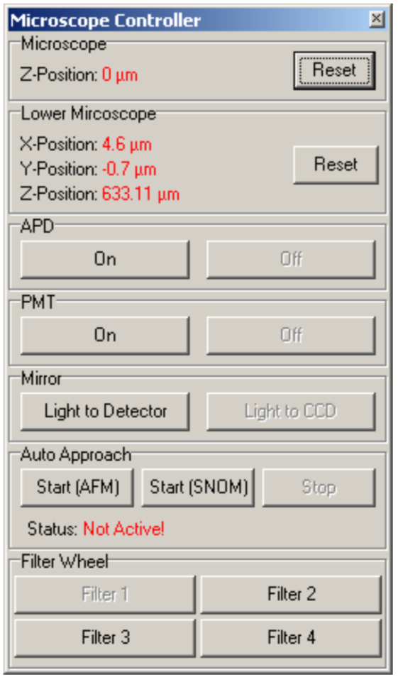

Project Update
David Curie
Mar 3, 2020

Pros
- Able to open ScanCtrl_Spectroscopy_Plus
- Can move sample stage with software and remote control
- Can get "something" to "collect data"
Cons
- Program crashes for no apaprent reason at random times
- No live video feed of sample
- Unable to access all settings outlined in manual